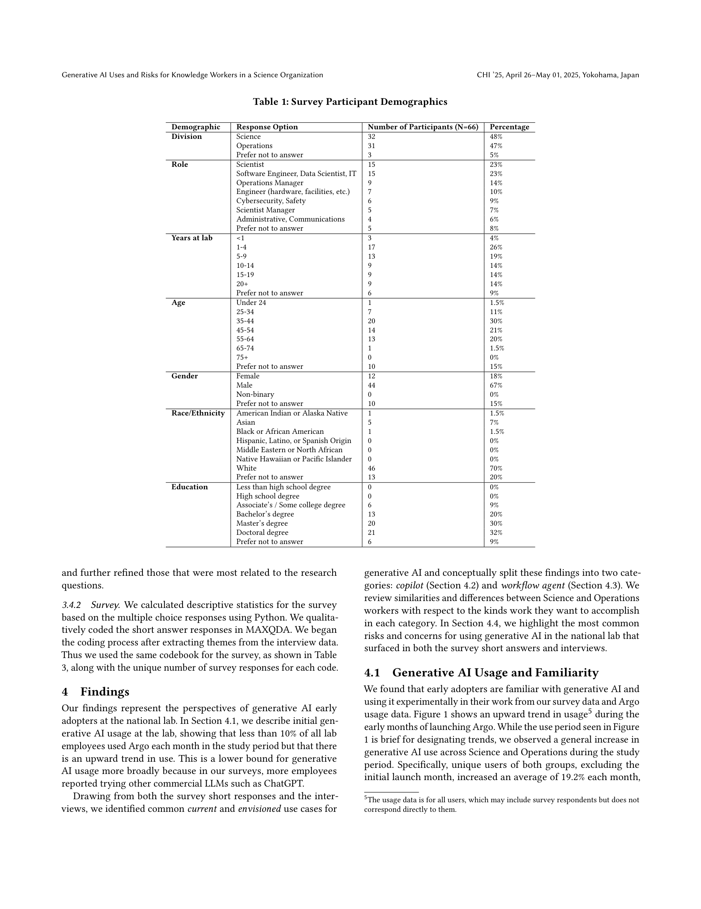
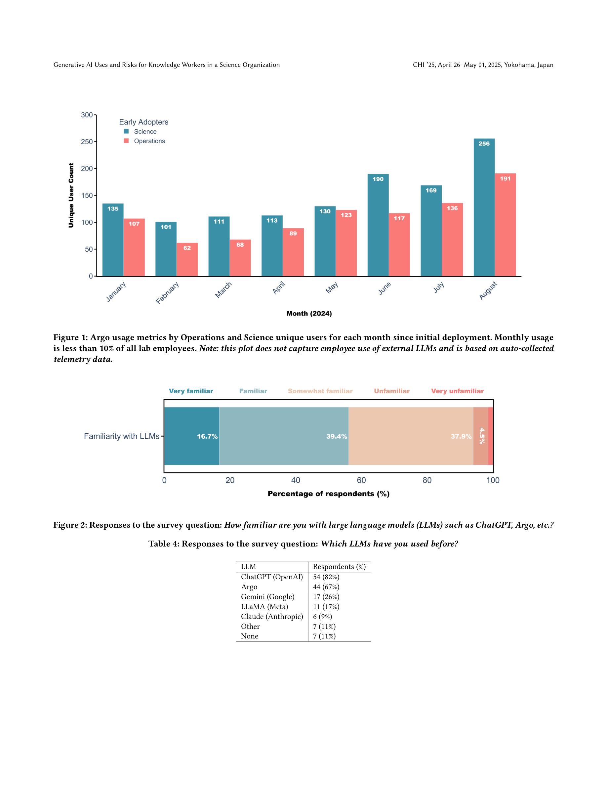
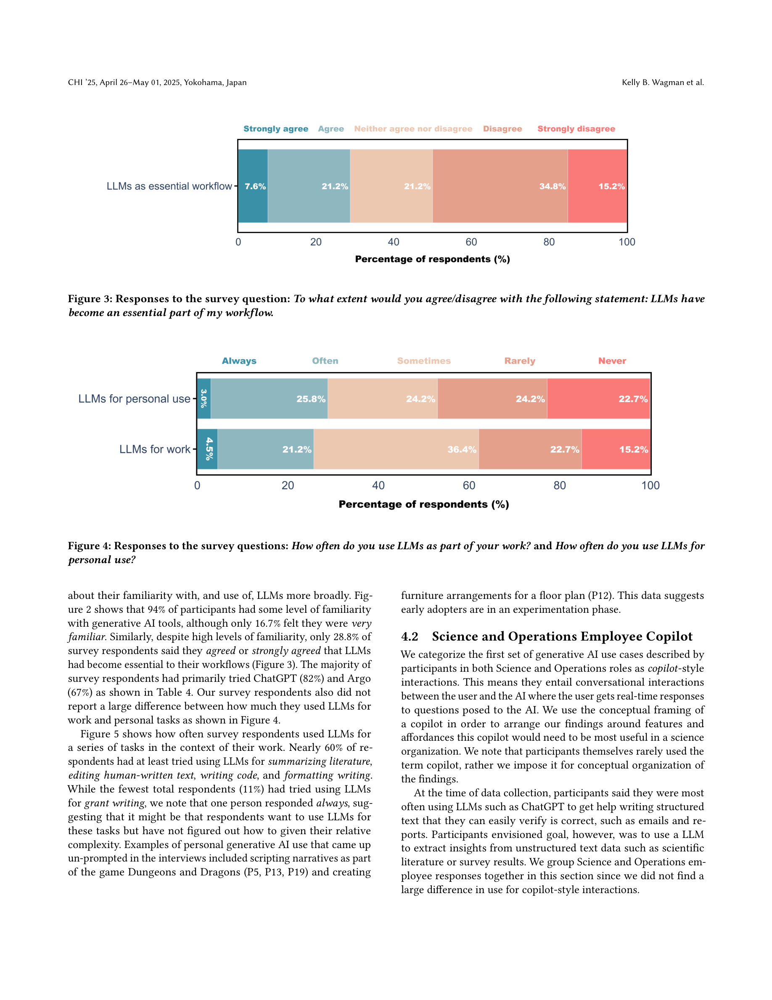
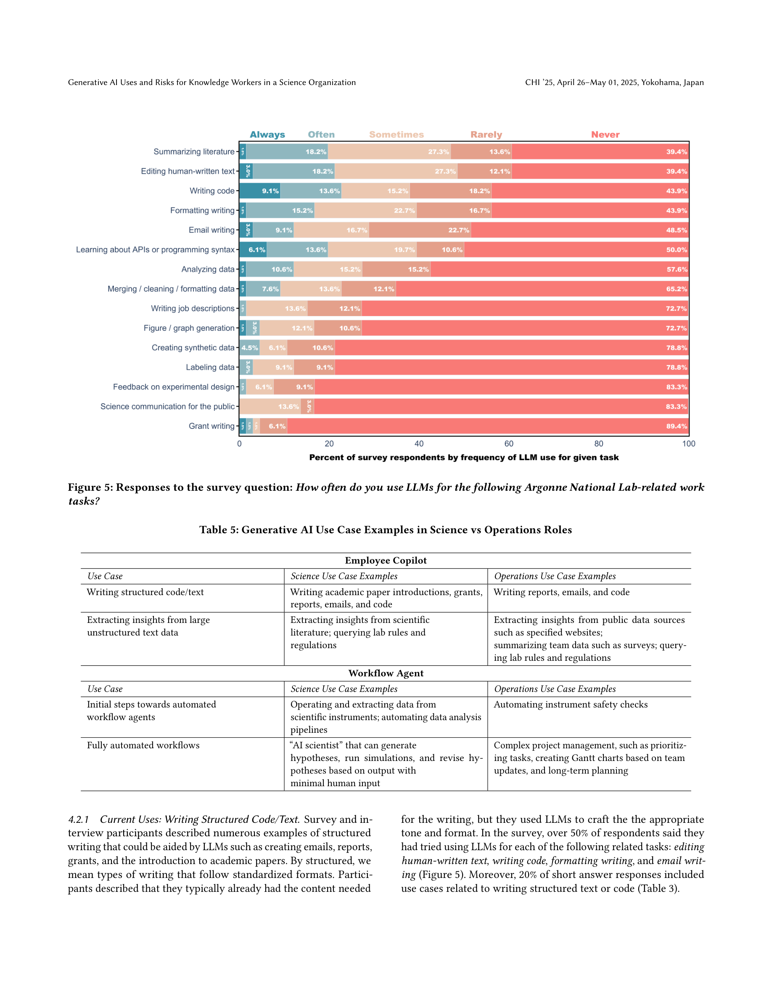

Figure 1

Figure 2
미국 국립연구소(Argonne National Laboratory)의 Science 및 Operations 직원들을 대상으로 생성형 AI의 실제 활용 사례와 인식된 위험을 조사한 혼합 방법(mixed-methods) 연구이다. 설문(N=66), 심층 인터뷰(N=22), 그리고 내부 생성형 AI 인터페이스 "Argo"(GPT-3.5 Turbo 비공개 인스턴스)의 8개월간 사용 데이터를 분석하여, 활용 사례를 copilot(대화형 보조)과 workflow agent(자율/반자율 작업 자동화) 두 모달리티로 분류하고, 데이터 보안, 학술 출판, 고용 영향 등의 우려를 식별한다.

Figure 3
생성형 AI가 과학적 발견을 가속화할 잠재력을 가지지만, 과학 조직에서의 실세계 응용과 인식된 위험은 불확실하다. 기존 연구는 과학 연구 태스크 자체(과학 특화 LLM, 복잡한 과학 태스크 자동화)에 집중하거나 전문 직종(법률, 마케팅 등)의 지식 노동자를 대상으로 하고 있으며, 과학 조직 내 Science와 Operations 직원 모두를 포괄하는 연구는 전무하다. 특히 국립연구소와 같이 기밀 데이터를 다루는 조직 특유의 개인정보 보호 및 보안 우려에 초점을 맞춘 연구가 부재하다.

Figure 5
Argo 사용 추이: 배포 후 8개월간 월별 고유 사용자가 증가 추세(월 평균 19.2% 증가). Science 사용자가 Operations보다 26% 많으나, Operations의 월간 증가율이 더 높음(21.2% vs 19.3%). 전체 직원의 10% 미만이 월간 사용.
Copilot 활용 사례:
구상 사용: 대규모 비정형 텍스트 데이터에서 인사이트 추출(과학 문헌 요약, 조직 규정 검색, 팀 데이터 분석, 공개 데이터 모니터링).
Workflow Agent 활용 사례:
구상: "AI Scientist"(가설 생성-시뮬레이션-수정 피드백 루프), 복합 프로젝트 관리 자동화.
위험 및 우려:
CHI 2025에 게재된 시의적절한 HCI 연구로, "AI for Science"의 현장 실태를 인간 중심 관점에서 포착한다. Science와 Operations 직원을 함께 조사하여 copilot/workflow agent 프레임워크로 정리한 것은 조직 차원의 AI 도입 전략에 실용적 가치를 제공한다. 특히 내부 비공개 LLM(Argo) 배포의 실제 채택 데이터는 희소한 자원이다. 다만, 소규모 표본과 단일 조직 한정, GPT-3.5 시점이라는 기술적 한계로 인해 발견의 깊이와 일반화 가능성에 제약이 있다. 참여자들의 목소리가 생생하게 전달되는 질적 데이터의 풍부함은 강점이나, 정량적 생산성 측정이 동반되었다면 더 설득력 있었을 것이다. 과학 조직 특유의 보안 우려(미발표 연구, 수출 통제)에 대한 논의는 유사한 환경의 조직에 직접 적용 가능한 가치를 지닌다.